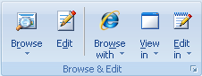

Используйте вкладку Главная для добавления новых Проектов и папок, управления ими, старта/остановки загрузок и просмотра загруженных сайтов.

Новый проект - Создаёт проект и отображает диалог Свойства Проекта.
Мастер - Создаёт новый Проект и в несколько шагов запрашивает его параметры.
Проект из шаблона - Показывает список шаблонов и ссылки на шаблоны из Web для просмотра списка шаблонов, опубликованных пользователями.
Новый шаблон - Создаёт новый локальный шаблон и отображает диалог Свойства для настройки его параметров.
Новая папка - Создаёт новую папку в дереве Проектов. Папки полезны для разделения Проектов по категориям. Вы также можете указать другое размещение для загружаемых файлов Проектов, принадлежащих папке.

Загрузить - Начинает загрузку выбранных Проектов или всех Проектов выбранной папки.
Остановить - Останавливает загрузку выбранного Проекта.
Пауза - Приостанавливает или возобновляет выполнение текущих загрузок. После нажатия кнопки, программа сначала дождётся окончания текущих загрузок файлов и не будет загружать файлы пока Вы вновь не возобновите загрузку. Смотрите также раздел Загрузка для получения дополнительной информации.
Карта сайта - Начинает загрузку выбранного Проекта. Однако загруженные файлы не сохраняются на диске. Они используются лишь для создания структуры Карты сайта.

Просмотр - кликните для просмотра загруженных файлов выбранного Проекта во встроенном браузере. Если Проект содержит множество начальных URL, вы можете кликнуть по нижней части кнопки Просмотр для выбора нужного элемента.
Правка - Открывает выбранный файл во встроенном редакторе.
Просмотр - Содержит список внешних браузеров для просмотра загруженных Проектов или некоторых файлов из карты Проекта.
Просмотр в & Правка в - Содержит список внешних инструментов для просмотра или правки загруженных файлов из карты Проекта. Вы можете задать список инструментов в диалоге Настройки| раздел Инструменты.

Избранное - Показывает подменю Избранное для создания нового Проекта из закладок Избранное Microsoft Internet Explorer, Netscape, Mozilla и Opera Hot lists.
Импорт настроек Проекта - Показывает подменю Вставить (позволяет вставить Проект или папку из буфера обмена в дерево Проектов), Загрузить из текстового файла и Восстановить (из резервной копии).
Файл Torrent - Открывает файл .torrent с вашего диска для создания нового Проекта загрузки используя протокол BitTorrent.
Экспорт файлов - Копирует все загруженные файлы выбранной папки или Проекта в указанный каталог. Файлы со специальной информацией (descr.wd3, *.primary) не копируются. Возможно добавление стандартных расширений файлов для копируемых файлов или их переименование с использованием форматов имён файлов 8+3 или Joilet. Другие возможности включают создание HTML Help, ZIP, EXE, MHT-файлов и передачи на FTP.
Экспорт настроек Проекта - Показывает подменю Копировать (копирует выбранную папку или настройки Проекта в буфер обмена. Вы можете вложить Проект в E-mail, чтобы переслать другому человеку). Сохранить в текстовый файл, Опубликовать проект (добавляет проект в коллекцию пользовательских шаблонов на сайте MetaProducts.com) и Резервное копирование (создает резервную копию настроек Проекта наряду со всеми загруженными файлами).

Свойства - Показывает диалоговое окно свойств выбранного Проекта.
Найти файлы или папки - Поиск Проекта или папки по заголовку, URL или описанию в дереве Проектов; поиск файла, каталога или имени сервера в карте сайта.
Найти содержание - Поиск по ключевым словам в загруженных web-сайтах.
Переименовать - Позволяет редактировать название выбранного Проекта или папки.
Удалить - Удаляет выбранный Проект или папку в дереве Проектов; удаляет файл или каталог в карте. "Только файлы Проекта" - удаляет все файлы, загруженные для данного Проекта. Сам Проект остаётся целым и невредимым.